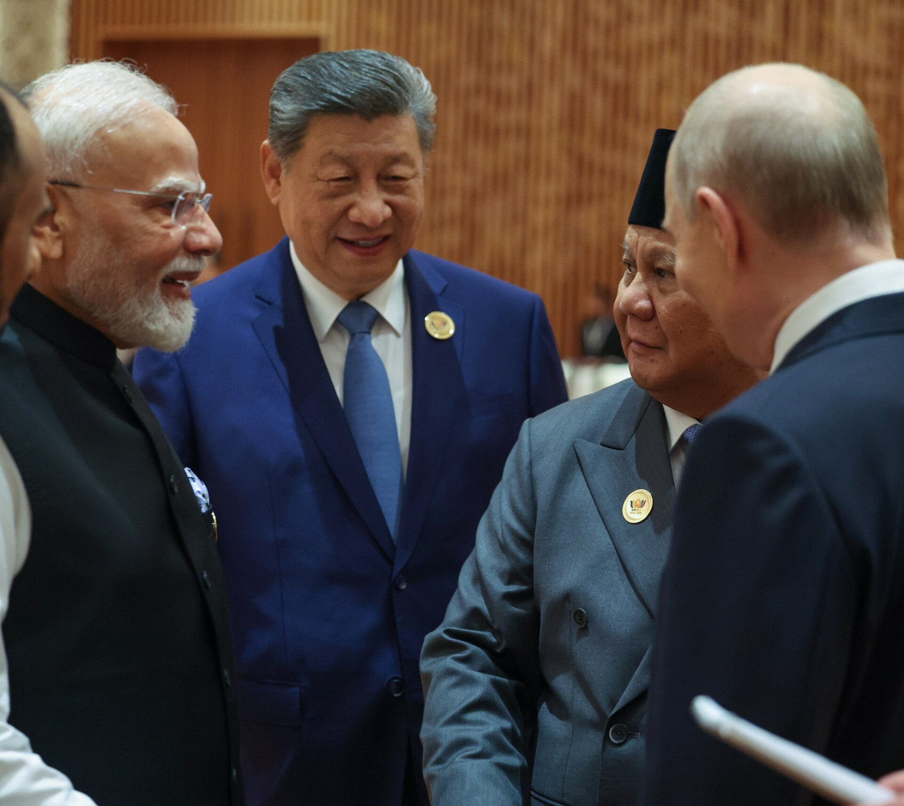

Дипломатические отношения между Узбекистаном и Индией (1991–1996): первые годы
Индия была среди стран, рано признавших независимость Узбекистана; протокол об установлении дипломатических отношений между двумя государствами был подписан в Ташкенте 18 марта 1992 года. Эта историческая статья на основе Министерства иностранных дел Индии, Посольства Индии в Ташкенте и Министерства иностранных дел Узбекистана излагает точные даты, первых послов, визиты высокого уровня 1990-х годов и многовековой исторический и культурный фон.

После того как 31 августа 1991 года Узбекистан провозгласил независимость, международное признание страны стремительно развернулось в течение следующих месяцев. Установление дипломатических отношений с Индией стало одним из ранних и важных этапов этого процесса. Приведённые ниже даты основаны на официальных источниках, таких как Министерство иностранных дел Индии (mea.gov.in), Посольство Индии в Ташкенте и Министерство иностранных дел Узбекистана (gov.uz).
Признание и 18 марта 1992 года
Индия признала независимость Узбекистана 26 декабря 1991 года, став одной из стран, рано признавших суверенитет молодого государства. Протокол об установлении дипломатических отношений между двумя государствами был подписан в Ташкенте 18 марта 1992 года. (Источник: Министерство иностранных дел Индии; Министерство иностранных дел Узбекистана.)
Посольства и первые дипломаты
Дипломатическое присутствие Индии в Ташкенте существовало ещё до независимости: консульство работало в городе с 1987 года. После протокола от 18 марта 1992 года представительство было повышено до уровня посольства. Первым временным поверенным в делах Индии в Узбекистане стал Ашок Мукерджи (с 18 марта 1992 года); первый посол страны в Узбекистане Далип Мехта вступил в должность 22 декабря 1992 года. (Источник: Посольство Индии в Ташкенте.)

Узбекистан, в свою очередь, открыл консульство в Нью-Дели в сентябре 1992 года; это представительство было повышено до уровня посольства в 1994 году. Таким образом, в 1992–1994 годах была сформирована основа для взаимных дипломатических представительств в двух столицах — Ташкенте и Нью-Дели. (Источник: Министерство иностранных дел Узбекистана; Министерство иностранных дел Индии.)
Исторический и культурный фон
Связи между двумя народами уходят вглубь веков. Захириддин Мухаммад Бабур, основатель династии Великих Моголов, правившей Индией с 1526 по 1857 год, родился в Андижане в Ферганской долине — на территории нынешнего Узбекистана — 14 февраля 1483 года; в 1526 году его победа в Первой битве при Панипате заложила основу его государства в Индии. Официальные источники приводят эту историческую связь как культурный фон отношений между двумя государствами. (Источник: Министерство иностранных дел Индии; энциклопедические источники.)
Торговые и паломнические пути также связывали два региона на протяжении многих веков. Справка Министерства иностранных дел Индии отмечает, например, что в 1717 году около 12 000 жителей Самарканда переселились в Индию из-за голода. Культурный обмен через караванную торговлю между Центральной Азией и Индией и через суфийские традиции является частью этой исторической связи. (Источник: Министерство иностранных дел Индии.)
Визиты высокого уровня в 1990-х годах
После установления отношений они были укреплены визитами высокого уровня. Премьер-министр Индии П. В. Нарасимха Рао посетил Узбекистан 23–25 мая 1993 года, став первым премьер-министром Индии, посетившим Узбекистан. Президент Узбекистана Ислам Каримов совершил свой первый государственный визит в Индию в январе 1994 года; в ходе визита были подписаны документы о сотрудничестве в экономической, культурной сферах и в области связи. (Источник: Министерство иностранных дел Индии; архив Президента Индии.)
Первые направления сотрудничества
Правовая основа сотрудничества в первые годы была укреплена рядом соглашений. В мае 1993 года было подписано соглашение о торговом и экономическом сотрудничестве, предусматривающее взаимный режим наибольшего благоприятствования (MFN); в 1993 году также было заключено соглашение об избежании двойного налогообложения. Торговля, культура, образование, фармацевтика и — позднее — информационные технологии вошли в число первых направлений сотрудничества. (Источник: Министерство иностранных дел Индии; Посольство Индии в Ташкенте.)
Место в ранней внешней политике Узбекистана
Установление отношений с Индией совпало с широким международным признанием Узбекистана: страна вступила в Организацию Объединённых Наций 2 марта 1992 года и в том же году присоединилась к другим крупным международным структурам. Ранние связи с Индией — многонаселённым и влиятельным в регионе государством — способствовали расширению дипломатического фундамента молодого Узбекистана. (Источник: Организация Объединённых Наций; Министерство иностранных дел Индии.)
Заключение
Признание 26 декабря 1991 года, протокол 18 марта 1992 года и учреждение посольств в Ташкенте и Нью-Дели в 1992–1994 годах — это подтверждённые точными датами первые этапы современных дипломатических отношений между Узбекистаном и Индией. Эти связи, построенные на историческом и культурном фоне, восходящем к эпохе Бабура, были укреплены на высшем уровне визитом Рао в 1993 году и визитом Каримова в 1994 году.

Источники
- Ministry of External Affairs (India) — Brief on India-Uzbekistan Bilateral Relations
- Embassy of India, Tashkent — India-Uzbekistan Relations and Partnership
- Ministry of Foreign Affairs of the Republic of Uzbekistan — India
- Wikipedia — India–Uzbekistan relations
- Wikipedia — Babur (birthplace Andijan 1483; Mughal Empire founded 1526)
- United Nations — Member States (Uzbekistan admitted 2 March 1992)